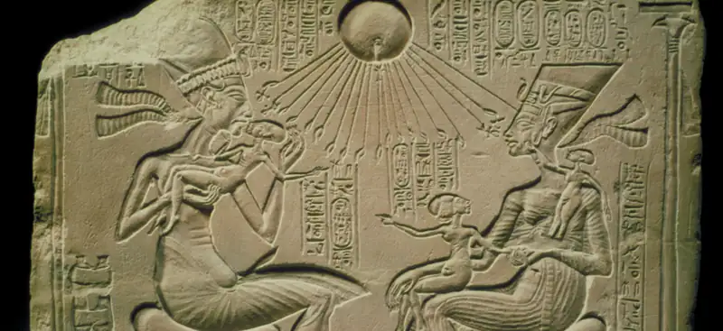
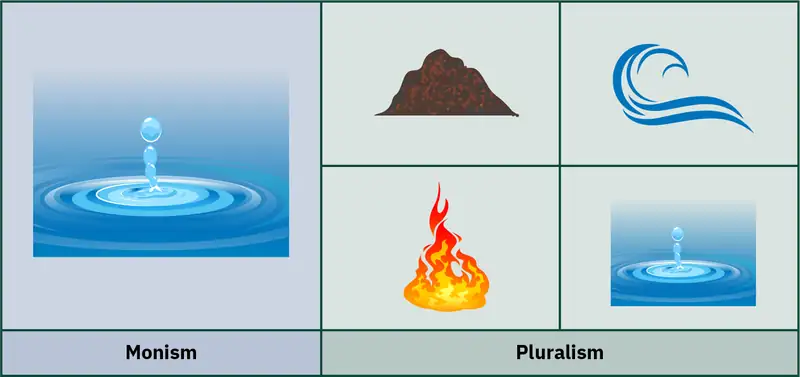
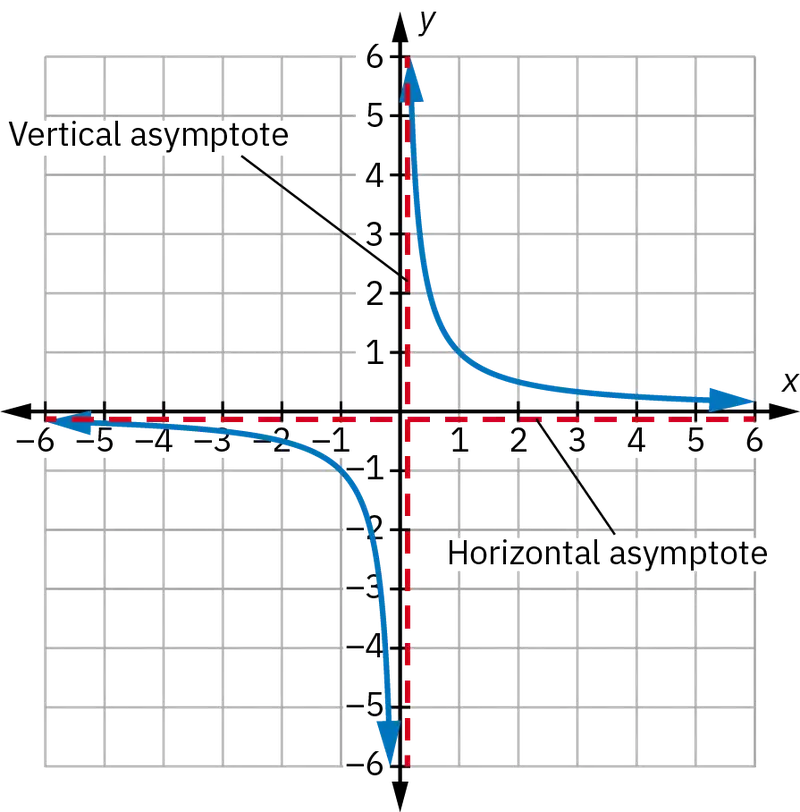
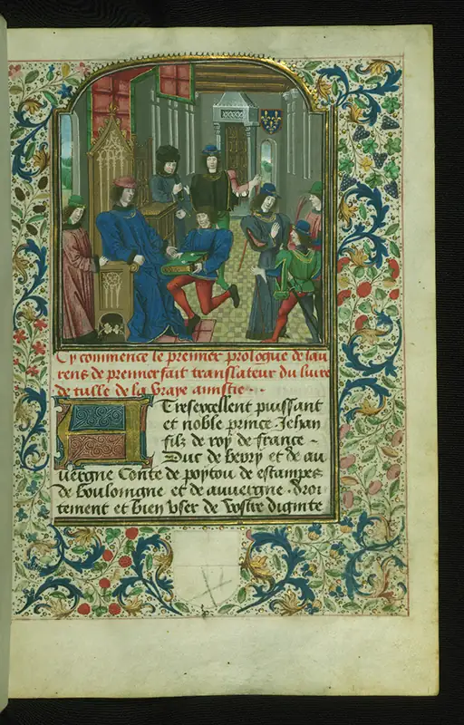
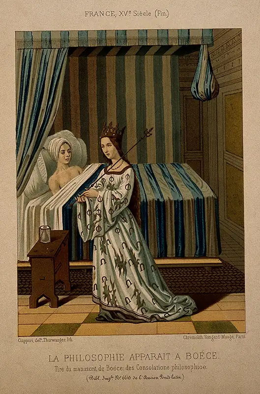
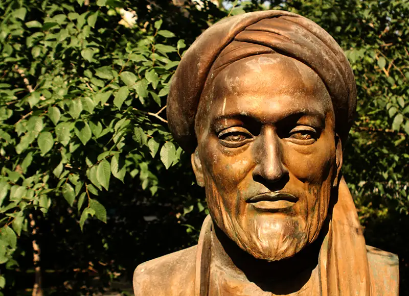
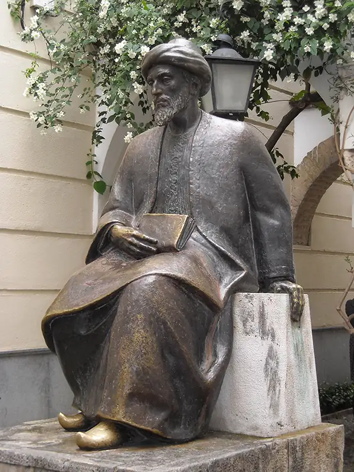

Chapter 4: The Emergence of Classical Philosophy¶
Introduction¶

Scholars long regarded ancient Greece as the birthplace of Western philosophy. After all, the word philosophy itself derives from the ancient Greek words philos (affection) and sophos (wisdom)—and indeed, ancient Greece produced the great minds of Socrates, Plato, and Aristotle. Yet the path of classical philosophy begins in North Africa, reaches Greece and Rome, jumps back across the Mediterranean, and spreads from Persia to Spain before it emerges to support what is frequently called the birth of modernity. This chapter examines that path.
In order to consider the historical path of philosophy across these various cultures, we need to begin with a brief account of how philosophers have studied the history of philosophy and how we might consider the practice of philosophy throughout history before turning to these historical traditions themselves.
4.1 Historiography and the History of Philosophy¶
Learning Objectives
By the end of this section, you will be able to:
- List and briefly describe three different approaches to the history of philosophy.
- Identify the strengths of each of the three different approaches to the history of philosophy.
- Identify the weaknesses of each of the three different approaches to the history of philosophy.
We will begin our discussion of the history of philosophy and the historiography of philosophy, or the study of how to conduct history pertaining to philosophy, with two fundamental questions: Why should one study the history of philosophy? And how should one study the history of philosophy? In response to the first question, the history of philosophy has both intrinsic and instrumental value. It can give us a more accurate understanding of our philosophical past while also informing contemporary approaches to philosophy. Historical authors provide a source of arguments, ideas, and theories that inform contemporary debates. Historical writings may inspire us. Finally, understanding the process by which philosophical ideas have developed can help contemporary philosophers better understand the debates and ideas that are important to them. In response to the second question: How should one study the history of philosophy? We may distinguish, broadly, between three main approaches to the history of philosophy—the presentist approach, the contextualist approach, and the hermeneutic approach.
Presentist Approach¶
A presentist approach to the history of philosophy examines philosophical texts for the arguments they contain and judges whether their conclusions remain relevant for philosophical concerns today. A presentist approach concerns itself with the present concerns of philosophy and holds past philosophers to present standards. This approach allows us to benefit from a rich body of past wisdom—even in our everyday lives. We might, for example, find strength from the Confucian proverb “Our greatest glory is not in never falling, but in rising every time we fall.” Inspired by the maxim of English philosopher Edmund Burke (1729–1797)—as restated by President John F. Kennedy—“The only thing necessary for the triumph of evil is for good men to do nothing,” we might volunteer, donate, or take action to help a cause. When attempting to understand a challenging situation, we might apply Occam’s razor, the idea that the most likely explanation is the one that requires the fewest assumptions.
The main limitation to this approach is that it neglects various contexts in which past philosophers lived and worked. This does not mean that the arguments found in philosophical texts are not important and that we should not focus on them. But the focus on arguments at the exclusion of anything else causes problems. It downplays the various ways that philosophers communicate their ideas and try to persuade readers of their truth.
In addition to reading philosophical texts too narrowly, the exclusive focus on arguments has been criticized for yielding a profoundly ahistorical understanding of the development of philosophy. Past philosophers are judged by contemporary standards instead of being understood in relation to the historical and cultural contexts in which they lived and wrote. Philosophers are found wanting because they do not contribute to contemporary debates in subfields such as epistemology (the study of the basis for knowledge) and metaphysics (the study of the nature of reality). Additionally, ideas from contemporary philosophy may be attributed to historical philosophers in a way that does not accurately apply to them. This ignores the differences in time, culture, and context between contemporary philosophers and historical philosophers, an error known as anachronism.
An example will clarify these points. Plato’s Allegory of the Cave, which describes humanity as prisoners within a cave reacting to shadows on the wall, might be read in terms of how it contributes to debates in epistemology or metaphysics. However, it is anachronistic and inaccurate to claim that this is exclusively what it is about, as the Allegory of the Cave also has political significance specific to Plato’s time and social context. We can only grasp the political significance once we understand the situation in Plato’s home city of Athens during his lifetime. Athens had suffered a terrible defeat at the hands of Sparta in the Peloponnesian War. Following the war, Athens’s democratic government was replaced with a group of wealthy tyrants who were sympathetic to Sparta, called the Thirty Tyrants. Plato, who had relatives among the Thirty Tyrants, was thought to be sympathetic to the Thirty Tyrants and suspicious of those who were advocating for democracy. But when we realize that the Thirty Tyrants were the government responsible for Athens’s humiliating defeat and for the death of Plato’s beloved teacher Socrates, we understand why Plato questions the limits of human understanding. Plato’s political project becomes easier to understand as well, for in questioning the limits of human knowledge and seeking a deeper understanding of the truth, the Allegory of the Cave attempts to solve what Plato sees as the problems inherent in both tyrannical and democratic forms of government. Plato’s hope is to foster generations of individuals who have a greater understanding of truth and will serve capably in government.
Connections
The chapter on metaphysics covers the Allegory of the Cave in more detail.
Contextualist Approach¶
The contextualist approach to philosophical texts aims to be more sensitive to the history surrounding their creation. This approach attempts to understand historical philosophy on its own terms, using concepts and ideas that would have been appropriate to the time period in which they were written. Contextualist understandings of philosophy are interested in getting the history right. They give us a richer understanding of philosophical ideas and help avoid misinterpretation.
For example, an often-misunderstood passage from the Hebrew Bible is “an eye for an eye.” Many today interpret this passage as a justification for violence, not realizing that the passage reflects a body of laws meant to restrict retaliation. For millennia, when a wrong was done to an individual, a family or another group to which the individual belongs would often seek retribution. This retribution was viewed as a means both of achieving justice and of dissuading others from wronging the family or group in a similar way in the future. The biblical law, which was eventually adopted widely across the Middle East, meant that the wrongdoer or the group to which the wrongdoer belonged was not to be made to pay more than an eye for an eye. In this way, a justice system might prevent the extralegal cycle of increasingly violent retribution that still takes place between some groups, such as in gang or underworld warfare. Moreover, the biblical law also set monetary equivalents for specific wrongdoings so that physical harm, as a form of punishment, could be avoided. By understanding the context of the phrase “an eye for an eye,” we gain greater insight into human behavior and how systems of justice can prevent violence from cycling out of control.
While the contextualist approach makes possible this detailed and rich type of understanding, there is a danger that contextualist historians might fall into the trap of antiquarianism. This means that they might become interested in the history of philosophy for history’s sake, ignoring the instrumental value of historical philosophy for contemporary philosophers.
Hermeneutic Approach¶
A third approach to the history of philosophy attempts to address problems inherent to the presentist and contextualist approaches. The hermeneutic approach takes the historical context of a text seriously, but it also recognizes that our interpretation of history is conditioned by our contemporary context. The hermeneutic historian of philosophy recognizes both that a contemporary philosopher cannot abandon their contemporary framework when interpreting historical texts and that the context of historical authors deeply influenced the way that historical texts were written. Additionally, hermeneutic philosophers contend that philosophical ideas are historical in nature; that is, no philosophical concept can be understood if it is completely abstracted from the historical process that generated it. However, a hermeneutic approach to philosophy can fall prey to a tendency to think about history as culminating in the present. This view of history might be summarized as an account of history that says, “a, then b, then c, then me.” While this may be the way things look now, it’s important to remember that our contemporary perspective will be eclipsed by future historians of philosophy. Also, we ought not assume that history has a purpose or progression. It may be that the sequence of historical events lacks any goal.
Table 4.1 summarizes these three approaches, as well as the strengths and weaknesses of each.
Table 4.1 Three Different Approaches to Studying the History of Philosophy
| Approach | Brief Description | What it Offers | Where it Can Fall Short |
|---|---|---|---|
| Presentist | Concerns itself with the present questions of philosophy and holds past philosophers to present standards | Allows people to benefit from a rich body of past wisdom | Neglects the contexts in which past philosophy was developed |
| Contextualist | Attempts to understand historical philosophy on its own terms, using concepts and ideas that would have been appropriate to the time period in which they were written | Provides a richer understanding of philosophical ideas and helps avoid misinterpretations | Might become interested in the history of philosophy for history’s sake, ignoring the instrumental value of historical philosophy for contemporary people |
| Hermeneutic | Recognizes both that contemporary people cannot abandon their own frameworks when interpreting historical texts, and that the context of historical authors deeply influenced the way that historical texts were written | Grounds the philosophy of the past within a historical context, while also acknowledging its lasting value | Can fall prey to a tendency to think about history as culminating in the present |
4.2 Classical Philosophy¶
Learning Objectives
By the end of this section, you will be able to:
- Evaluate the influence of Egyptian scholarship on classical Greek philosophy.
- Describe the key ideas of the most influential Greek philosophers.
- Describe the key ideas of the most influential Roman philosophers.
- Distinguish between major schools of classical thought.
Egyptian Origins of Classical Philosophy¶
The understanding that the roots of classical thought lie, at least in part, in Egypt is as old as the ancient Greeks themselves. In The Histories of Herodotus, the ancient Greek historian Herodotus (c. 484–425 BCE) traces Greek beliefs about the gods, religious practices, and understanding of the natural world to Egypt. Herodotus claimed the ancient Greeks adopted practices and ideas as diverse as solemn processions to temples, the belief in an immortal soul, and the knowledge of geometry and astrology from the Egyptians. Herodotus notes that the people of Heliopolis, one of the largest cities in ancient Egypt, “are said to be the most learned in records of the Egyptians” (Herodotus 1890, 116). Plato spent 13 years in Heliopolis, and Pythagoras (c. 570–495 BCE) studied mathematics in Heliopolis for more than two decades (Boas 1948).
Egyptian and Babylonian Mathematics¶
Could Pythagoras have learned, rather than discovered, the “Pythagorean” theorem—the law of relationships between the sides and hypotenuse of a right triangle—in Egypt? Almost assuredly. A Babylonian clay tablet dating to approximately 1800 BCE, known as Plimpton 322, demonstrates that the Babylonians had knowledge not only of the relationship of the sides and hypotenuses of a right triangle but also of trigonometric functions (Lamb 2017). Further, the Rhind Mathematical Papyrus provides evidence that the Egyptians had advanced knowledge of algebra and geometry as early as 1550 BCE, presenting problems that include calculating the volume of cylindrical granaries and the slope of pyramids. The Berlin Papyrus 6619, usually dated between 1800 BCE and 1649 BCE, contains a solution to a problem involving the Pythagorean theorem and evidence that the Egyptians could solve quadratic equations. Pythagoras studied with the priests of Heliopolis more than 1,000 years after these documents were created. It is possible that this Egyptian mathematical knowledge had been lost and that Pythagoras rediscovered the relationship during or after his studies in Heliopolis. However, given what we know now about Greek individuals visiting and residing in Egypt, it seems more likely that he was introduced to the knowledge there. As with mathematics, there are specific philosophical ideas that can be traced back to Egypt. This is particularly the case within metaphysics, the branch of philosophy that studies reality, being, causation, and related abstract concepts and principles.
Akhenaten’s Metaphysics¶
In the mid-14th century BCE, Akhenaten became pharaoh in Egypt. Partly in an attempt to undercut the growing power of the priests, Akhenaten abolished all other gods and established Aten, the sun god, as the one true god. Akhenaten held that solar energy was the element out of which all other elements evolved or emanated (Flegel 2018). In proposing this idea, Akhenaten established an unseen divinity responsible for causation. Aten became the one true substance that created the observable world. One hymn reads, “You create millions of forms from yourself, the one, / cities and towns / fields, paths and river” (Assmann [1995] 2009, 154). Although the Egyptian elite quickly reestablished the temples and the practices of the full pantheon of gods after Akhenaten’s death, theological thought incorporated this idea of an all-powerful invisible first cause. This idea evolved, with the phrase “one and the millions” coming to signify the sun god as the soul and the world as its body (Assmann 2004, 189). As you will see later in this chapter, this same concept—a single, invisible, unchanging substance expressing itself through forms to give rise to the material world—is the key principle in Plato’s metaphysics.
The Egyptian Origins Controversy¶
Scholars have long puzzled over to what extent the origins of classical thought can be said to lie in Egypt. In recent years, a heated debate has erupted over this question. In the three-volume text Black Athena: The Afroasiatic Roots of Classical Civilization, Martin Bernal, a contemporary American professor specializing in modern Chinese political history, argued that the ancient Egyptians and Phoenicians played a foundational role in the formation of Greek civilization and philosophy. He further claimed that an “ancient model” recognizing the African and Middle Eastern origins of Greece was widely accepted until the 19th century, when it was replaced by a racist “Aryan model” proposing Indo-European origins instead. Mary Lefkowitz, a contemporary professor of classical studies, has famously critiqued Bernal’s work. Lefkowitz’s position is that though it is important to acknowledge the debt the Greeks owe to Egyptian thought, Greek philosophy was not wholly derived from Egypt, nor did Western civilization arise from Africa. A bitter academic war of words has ensued, with Lefkowitz and other prominent scholars noting significant errors in Bernal’s scholarship. Lefkowitz authored Not Out of Africa: How Afrocentrism Became an Excuse to Teach Myth as History in 1997. Bernal responded with Black Athena Writes Back in 2001. This exchange reflects a much broader phenomenon in which academics spar over the accuracy of historical narratives and the interpretation of philosophical ideas, often presenting the issues as ethical questions. By thinking critically about these disagreements, we gain deeper insight not only into the topic of study but also into philosophical and political discourse today.
Write Like a Philosopher
Read the summary of these two articles: (1) Mary Lefkowitz’s “Egyptian Philosophy: Influence on Ancient Greek Thought” and (2) Simphiwe Sesanti’s “Teaching Ancient Egyptian Philosophy (Ethics) and History: Fulfilling a Quest for a Decolonised and Afrocentric Education”. Identify two arguments from each article, and identify two to three sources that could provide evidence to substantiate or refute each argument.
Ancient Greek Philosophy¶
Classical philosophy emerged in ancient Greece, following a procession from what are known as the Presocratics; to the three great philosophers, Socrates (470–399 BCE), Plato (c. 428–347 BCE), and Aristotle (384–322 BCE); and then to later schools of thought, including the Epicureans and Stoics. As is the case with all ancient societies, knowledge of these thinkers is limited by the documentation that has survived. Socrates, for example, wrote down nothing. Rather, Plato wrote dialogues featuring his mentor Socrates engaged in philosophical debate with various individuals in Athens, some of them his fellow citizens and other prominent visitors to the city. The material that has survived from ancient Greece has fueled philosophical discourse for two millennia.
The Presocratics¶
The term Presocratics is somewhat problematic. At least a few of the thinkers considered part of this school were contemporaries of Socrates and are mentioned in Plato’s dialogues. Foremost among these are the Sophists, traveling teachers of rhetoric who serve as foils for Plato’s philosophers. Plato sought to distinguish philosophers, seekers of truth, from Sophists, whom he regarded as seeking wealth and fame and peddling in fallacious arguments. Indeed, one of the most prominent Sophists, Protagoras, is a main character in the dialogue that bears his name.
Researching the Presocratics is difficult because so little of their work has survived. What we have is fragmentary and often based on the testimony of later philosophers. Still, based on the work that is available, we can characterize the Presocratics as interested in questions of metaphysics and natural philosophy, with many of them proposing that nature consisted of one or more basic substances.
The fragments of the works of these early philosophers that have come down to us focus on metaphysical questions. One of the central debates among the Presocratics is between monism and plurism. Those who think nature consisted of a single substance are called monists, in contrast to pluralists, who see it as consisting of multiple substances. For example, the monist Thales of Miletus thought that the basic element that comprised everything was water, while Empedocles the pluralist sought to show that there were four basic elements (earth, air, fire, and water) that were resolved and dissolved by the competing forces of love and strife.

Prominent Monists¶
Presocratic philosophers who sought to present a unified conception of nature held that nature ultimately consists of a single substance. This proposition can be interpreted in various ways. The claim proposed by Thales of Miletus (620–546 BCE) that the basic substance of the universe was water is somewhat ambiguous. It might mean that everything is ultimately made of water, or it might mean that water is the origin of all things. Thales and two of his students, Anaximander and Anaximenes, made up the monist Milesian school. Anaximander thought that water was too specific to be the basis for everything that exists. Instead, he thought the basic stuff of the universe was the apeiron, the indefinite or boundless. Anaximenes held that air was the basic substance of the universe.
Parmenides, one of the most influential Presocratic monists, went so far as to deny the reality of change. He presented his metaphysical ideas in a poem that portrays himself being taken on a chariot to visit a goddess who claims she will reveal the truths of the universe to him. The poem has two parts, “the Way of the Truth”, which explains that what exists is unified, complete, and unchanging, and “the Way of Opinion”, which argues that the perception of change in the physical world is mistaken. Our senses mislead us. Although it might seem to us that Parmenides’s claim that change is not real is absurd, he and his student Zeno advanced strong arguments. Parmenides was the first person to propose that the light from the moon came from the sun and to explain the moon’s phases. In this way, he showed that although we see the moon as a crescent, a semicircle, or a complete circle, the moon itself does not change (Graham 2013). The perception that the moon is changing is an illusion.
Zeno proposed paradoxes, known as Zeno’s paradoxes, that demonstrate that what we think of as plurality and motion are simply not possible. Say, for example, that you wish to walk from the library to the park. To get there, you first must walk halfway there. To finish your trip, you must walk half of the remaining distance (one quarter). To travel that final quarter of the distance, you must first walk half of that (an eighth of the total distance). This process can continue forever—creating an infinite number of discrete distances that you must travel. It is therefore impossible that you arrive at the park. A more common way to present this paradox today is as a mathematical asymptote or limit (Figure 4.4). From this point of view, you can never reach point a from point b because no matter where you are along the path, there will always be a distance between wherever you are and where you want to be.

Video: The Paradoxes of Zeno
Prominent Pluralists¶
Parmenides and Heraclitus (525–475 BCE) held diametrically opposed views concerning the nature of the universe. Where Parmenides saw unity, Heraclitus saw diversity. Heraclitus held that nothing remains the same and that all is in flux. One of his most well-known sayings illustrates this well: “[It is not possible to step twice into the same river]. . . . It scatters and again comes together, and approaches and recedes” (quoted in Curd 2011, 45).
Anaxagoras (500–428 BCE) and Empedocles (494–434 BCE) were substance pluralists who believed that the universe consisted of more than one basic kind of “stuff.” Anaxagoras believed that it is mind, or nous, that controls the universe by mixing and unmixing things into a variety of different combinations. Empedocles held that there were four basic substances (the four elements of air, earth, fire, and water) that were combined and recombined by the opposing forces of love and strife.
Finally, there are the schools of the atomists, who held the view that the basic substance of the universe was tiny, indivisible atoms. For the atomists, all was either atoms or void. Everything we experience is a result of atoms combining with one another.
Connections
The chapter on metaphysics covers monism and pluralism across cultures.
Presocratic Theology¶
The Presocratic philosopher Pythagoras (570–490 BCE) and his followers, known as the Pythagoreans, comprised a rational yet mystical sect of learned men. The Pythagoreans had a reputation for learning and were legendary for their knowledge of mathematics, music, and astronomy as well as for their dietary practices and other customs (Curd 2011). Like Socrates, Pythagoras wrote nothing, so scholars continue to debate which ideas originated with Pythagoras and which were devised by his disciples.
Among the Pythagoreans’ key beliefs was the idea that the solution to the mysteries of the universe was numerical and that these numerical mysteries could be revealed through music. A reminder of their mathematical legacy can be found in the Pythagorean theorem, which students continue to learn in school. Pythagoreans also believed in the transmigration of souls, an idea that Plato would adopt. According to this doctrine, the soul outlives the body, and individuals are reborn after death in another human body or even in the body of a nonhuman animal.
Another important Presocratic philosopher who produced novel theological ideas is Xenophanes (c. 570–478 BCE). Xenophanes, who was fascinated by religion, rejected the traditional accounts of the Olympian gods. He sought a rational basis of religion and was among the first to claim that the gods are actually projections of the human mind. He argued that the Greeks anthropomorphized divinity, and like many later theologians, he held that there is a God whose nature we cannot grasp.
Socrates and Plato¶
As Socrates never wrote anything, he is remembered today because thinkers like Plato featured him in their writings. Plato deliberately dramatized the life of his teacher Socrates. One of the key questions of Plato’s scholarship is exactly how many liberties he took in depicting the life of his teacher. Scholars generally agree that the dialogues that Plato wrote early in his career are more faithful to the life of Socrates than later ones. His writings are usually divided into three periods: early, middle, and late.
The early dialogues feature a skeptical Socrates who refuses to advance any doctrines of his own. Instead, he questions his interlocutors until they despair of finding the truth at all. These early dialogues tend to be somewhat short with a simpler composition. One of the dialogues features a young man named Meno who is the pupil of a prominent Sophist. The dialogue focuses on the nature of virtue and whether virtue can be taught. At one point in the dialogue, Meno famously compares Socrates to a torpedofish, a fish similar to a stingray that paralyzes its prey. Socrates does this to his dialogue partners: they begin the discussion believing that they know something and over the course of the dialogue begin to question whether they know anything at all.
Connections
See the introduction to philosophy chapter for more on Socrates as the paradigmatic philosopher.
Gradually, Plato has Socrates give voice to more positive doctrines. These include what comes to be known as the theory of the forms, a metaphysical doctrine that holds that every particular thing that exists participates in an immaterial form or essence that gives this thing its identity. The invisible realm of the forms differs fundamentally from the changing realm we experience in this world. The invisible realm is eternal, unchanging, and perfect. The material things themselves change, but the immaterial forms remain the same. Consider, for example, the form of a rectangle: four adjacent straight sides that meet at 90-degree angles. You can draw a rectangle, but it is an imperfect representation. The desk or table you are sitting at might be rectangular, but are its edges perfectly straight? How perfect was the instrument that cut the sides? If you nick the edge of a table, then it changes and becomes less like the form of a rectangle. With the doctrine of forms, Plato may be said to combine the metaphysics of Parmenides with that of Heraclitus into a metaphysical dualism.
The philosopher’s task is to access the immaterial realm of the forms and try to convince others of its truth. Plato further believed that if we understand the true nature of virtues like wisdom, justice, and courage, we cannot avoid acting in accordance with them. Hence, rulers of states should be philosopher-kings who have the clearest understanding of forms. Yet philosopher-kings never have perfect knowledge because our understanding is based on a material realm that is always changing. True knowledge is only possible in the abstract realms, such as math and ethics.
In the dialogues, Socrates claims that he was divinely inspired to question prominent citizens of Athens to determine whether their claims to know could be verified. These citizens grow annoyed with Socrates after some years of this treatment, eventually bringing charges against him for corrupting the youth and making the weaker argument appear the stronger. The proceedings of the resulting trial were immortalized in Plato’s Apologia, where Socrates presents his defense of his life’s work as a philosopher. The dialogue’s name derives from the Greek apologia, meaning “defense”—Socrates never apologizes for anything! He is found guilty and sentenced to death. Socrates becomes a martyr to philosophy, put to death by the democratic government of Athens.
Connections
This text examines Plato’s ideas in greater depth in the chapters on metaphysics, epistemology, value theory, and political philosophy.
Aristotle¶
During the Middle Ages, people referred to Plato’s most famous pupil Aristotle as simply “the Philosopher.” This nickname is a testament to his enduring fame, as well as to the fact that he was driven by philosophical curiosity to try to understand everything under the sun. The first sentence of his famous work Metaphysics states, “Philosophy begins in wonder.” He exemplified this claim in his writing. His works ranged widely across all the main areas of philosophy, including logic, metaphysics, and ethics. In addition, he investigated natural philosophy, the fields of study that eventually gave rise to science. Aristotle also researched topics that would today be classified as biology and physics. Stylistically, his work was very different from that of his teacher. While Plato’s work was literary and even dramatic, Aristotle’s writings are presented as lecture.
Connections
Explore Aristotle’s ideas in greater depth in the chapters on metaphysics and epistemology.
Plato and his successors were prone to mysticism. It was easy to translate the philosophical theory of the forms into a mystical doctrine in which the forms were known by the mind of God. Aristotle resisted this trend. At the center of Aristotle’s work was his doctrine of the four causes. He believed that the nature of any single thing could be understood by answering four basic questions: “What’s it made of?” (material cause), “What shape does it have?” (formal cause), “What agent gave it this form?” (efficient cause), and, finally, “What is its end goal?” (final cause). Not only can we explain the nature of anything by answering these four basic questions, we can also understand the nature of the universe. Aristotle’s universe is a closed system that is comprehensible to humanity because it is composed of these four causes. Each cause leads to another, until we get to the first cause or prime mover at the head of it all. Somewhat obscurely, Aristotle claims that this first cause is “thought thinking itself.”
In addition to the doctrine of the four causes, it is important to understand Aristotle’s account of the soul. Unlike Plato, who held that the soul is an eternal substance that is reborn in various bodies, Aristotle has a functional conception of the soul. He defined the soul based upon what the soul does. In Aristotle’s understanding, all living things have souls. Plants have a vegetative soul that promotes growth and the exchange of nutrients. The animal soul, in addition to taking in nutrients and growing, experiences the world, desires things, and can move of its own volition. Added to these various functions in humans is the ability to reason.
With the four causes and the functional conception of the soul, we can begin to understand Aristotle’s ethics. Aristotle systematized Plato’s conception of ethics based upon his conception of the self and his four causes. Since everything that exists has a purpose, one of the basic questions for ethics is “What is the purpose of the human being?” After considering such candidates as pleasure and power, Aristotle settles on the answer “happiness” or, more accurately, “eudaimonia.” Rather than a fleeting emotional state, eudaimonia is better understood as “flourishing.” So the question at the heart of Aristotle’s ethics is “How should humans best achieve happiness?” His basic answer is that we achieve eudaimonia by cultivating the virtues. Virtues are habits of character that help us to decide what action is preferable in a particular moment. Cultivating these virtues will helps us to lead a fulfilling life.
It is generally true to say that Plato tended to be more focused on the transcendental world of the forms while Aristotle and his followers were more focused on this worldly existence. They shared a belief that the universe was comprehensible and that reason should serve as a guide to ordering our lives.
Connections
Aristotle’s virtue ethics are explored in much greater depth in the chapters on value theory and normative moral theories.
Epicureans¶
In the wake of the giants of Greek philosophy—Socrates, Plato, and Aristotle—some philosophers turned away from Plato’s ideal forms and toward materialism. In this, they can be seen as furthering a trend already present in the thinking of Aristotle. For Aristotle, there can be no immaterial forms—everything that exists has some material basis, though he allows an exception for his first cause, the unmoved mover.
The Epicureans steadfastly rejected the existence of immaterial forms, unmoved movers, and immaterial souls. The Epicureans, like Aristotle, embraced empiricism, which means that they believed that all knowledge was derived from sense experience. This view was the basis of the revival of empiricism in 18th-century British thought and scientific practice. They espoused an ethical naturalism that held that in order to live a good life we must properly understand human nature. The ultimate goal of life is to pursue pleasure. Despite their disagreements with Plato and, to a lesser extent, Aristotle, the Epicureans agreed with their predecessors that human existence ought to be guided by reason.
The two principal Greek Epicureans were Epicurus himself (341–270 BCE) and his Roman disciple Lucretius (c. 99–55 BCE). Although Epicurus’s views are characterized as hedonistic, this does not mean that he believed that we ought to be indiscriminate pleasure-seekers. Instead, he proposed that people could achieve fulfilling lives if they were self-sufficient and lived free from pain and fear. Of course, complete self-sufficiency is just as impossible as a life utterly free from pain and fear, but Epicurus believed that we should strive to minimize our dependence upon others while limiting the pain in our lives. Epicureans thought that the best way to do this was to retire from society into philosophical communities far from the hustle and bustle of the crowd. Epicurus and Lucretius saw the fear of death as our most debilitating fear, and they argued that we must overcome this fear if we were going to live happy lives.
Lucretius developed Epicurean philosophy in a poem called De Rerum Natura (On the nature of things). This poem discusses ethical ideas, but physics provides its focus. Lucretius adopts a material atomism that holds that things are composed of atoms in motion. Rejecting religious explanations, he argues that the universe is governed by chance and exemplified by these atoms in motion. Although the Epicurean philosophers were critically responding to the work of Plato and Aristotle, it should be evident that they also have antecedents in Presocratic thought. We can see this in their atomism and their religious skepticism, which hearkens back to Xenophanes.
Roman Philosophy¶
Just as Hellenistic philosophy developed in the long shadows cast by Plato and Aristotle, Roman philosophy also used these two giants of Greek philosophy as reference points. While Roman philosophical traditions were built upon their Greek forebearers, they developed in a Roman cultural context. Rome began as a republic before becoming an empire, and Roman philosophy was affected by this political transformation. Still, Roman philosophical schools were thoroughly grounded in Greek philosophy, with many Roman philosophers even choosing to write in Greek rather than Latin, since Greek was viewed as the language of scholarship.
Rhetoric and Persuasion in Politics¶
Recall that Plato defined philosophy in opposition to sophistry. Whereas the philosopher sought the truth in a dispassionate way using reason as a guide, the Sophist addressing a crowd was indifferent to truth, seeking power and influence by appealing to the audience’s emotions. This harsh critique of rhetoric, which can be defined as the art of spoken persuasion, softened with subsequent philosophers. Indeed, Aristotle wrote a text called Rhetoric in which he sought to analyze rhetoric as the counterpart to philosophy. The tension never disappears entirely, however, and the relationship between philosophy and rhetoric and, more generally, the relationship between philosophy and politics remains a perennial question.
Despite the fact that his ideal statesman was a philosopher, Plato generally sought to keep philosophy distinct from the grubbiness of real politics and was concerned about the messiness of democratic politics in particular. In the Roman political context, this ambivalence becomes less apparent. Examples of philosophers who were also statesmen include Cicero (106–43 BCE) and Marcus Aurelius (121–180 CE). Marcus Aurelius even served as emperor of Rome from 161 to 180 CE. However, as the Roman Republic gave way to the Roman Empire, philosophers shifted inward by focusing on things that were in their control.
Stoicism¶
Aristotle held that eudaimonia is worthwhile at least in part because it helps us to better deal with various inevitable misfortunes. The Roman Stoics further developed this idea, proposing four core virtues: courage, justice, temperance, and wisdom. The Stoics were wary of the type of false judgments that might arise from the emotions. They were also uneasy with the loss of control associated with strong emotions, observing that some people can become enslaved to their passions. The Stoics prized rational self-control above everything else. This constant work at maintaining inner freedom epitomizes the Stoic conception of philosophy (Hadot 2002).
Write Like a Philosopher
Marcus Aurelius was both a Roman emperor and a Stoic philosopher. His writings, which he meant only for himself, were eventually published in Meditations, a work that serves as one of the major sources of Stoic thought. Although much of Marcus Aurelius’s reign fell under a period known as the Pax Romana, when the empire enjoyed relative stability and peace, the end of his reign occurred during a period of major wars and a plague. This famous passage, taken from Book VII, Section 47 of the Meditations, provides advice about how to deal with pain or grief called by an external source. Translate it into your own language. Then explain why you agree or disagree with Marcus Aurelius’s conclusions.
“If you are grieved about anything external, ’tis not the thing itself that afflicts you, but your judgment about it; and it is in your power to correct this judgment and get quit of it. If you are grieved at anything in your own disposition; who hinders you to correct your maxims of life? If you are grieved, because you have not accomplished some sound and virtuous design; set about it effectually, rather than be grieving that it is undone. “But some superior force withstands.” Then you have no cause of sorrow; for, the fault of the omission lies not in you. “But, life is not worth retaining, if this be not accomplished.” Quit life, then, with the same serenity, as if you had accomplished it; and with good-will, even toward those who withstand you.”
The Stoics were systematic philosophers whose writings focused on ethics, physics, logic, rhetoric, and grammar. For the Stoics, the world consists of material bodies in motion, causally affecting each other. Real entities are those capable of causally affecting one another. The Stoic god is a material entity who exists in nature and meticulously manages it, the material first cause of the universe, Aristotle’s unmoved mover incarnated as a material entity. In other words, God is an animating reason that gives life to the universe. Unlike the Christian God who transcends the universe, the Stoic god is found within it, a force immanent to the universe who combines and recombines the four elements into things we can experience because they act upon us and we upon them. Stoicism developed at a time when politics in the Roman world was increasingly seen as something outside individuals’ power to change. So Stoics let politics go. While turning away from politics may indeed promote a tranquil life, it also promotes passivity. Thus, Stoicism reached a conclusion similar to that reached by Daoism, as explored in the chapter on early philosophy.
Podcast
Stoic ideas are enjoying something of a revival, as evidenced by the popularity of Ran Holliday’s Daily Stoic podcasts.
Academic Skepticism¶
Academic Skepticism is another aspect of Roman philosophy that developed out of a tendency found in earlier Greek thought. Recall that Socrates questioned whether we could ever know anything at all. The Academic Skeptics opposed the Stoic claims that sense impressions could yield true knowledge, holding instead that knowledge is impossible. Instead of knowledge, Academic Skeptics articulated the idea of degrees of belief. Things are more or less believable based on various criteria, and this degree of believability is the basis for judgment and action. Disciples of the Greek philosopher Pyrrho (c. 360–270 BCE) held that we had to suspend judgment when it comes to knowledge claims, going so far as to say that we cannot even reliably claim that we cannot know anything. Rather than suspending all judgment, Academic Skeptics sought to demonstrate that knowledge claims lead us to paradoxical conclusions and that one can argue cogently both for and against the same proposition.
The philosopher, orator, and statesman Cicero (106–43 BCE) was the most prominent of the Academic Skeptics. His works provide much of the information we have about the school. He had a decisive influence on Latin style and grammar and was decisive in the introduction of Hellenistic philosophy into Rome. The rediscovery of his work in the 15th century ushered in the European Renaissance.

Neoplatonism¶
Plotinus (c. 204–270) led a revival of Plato’s thought in the late Roman Empire that lasted until Emperor Justinian closed Plato’s Academy in 529. Plotinus believed that he was simply an expositor of Plato’s work, but the philosophy he developed, known as Neoplatonism, expanded on Plato’s idea. Neoplatonism arose during a time of cultural ferment in the Roman Empire, incorporating ideas borrowed from sources such as Judaism and early Christianity. The key metaphysical problem in Neoplatonism was accounting for how a perfect God could create a universe that was manifestly imperfect. Plotinus solved this problem by applying ideas similar to Plato’s theory of forms. The perfect, unchanging realm is the one inhabited by God, but creation inhabits the changing realm, which only mirrors forms imperfectly. Plotinus claims that creation emanates from God, but the further one is from this source the less perfect things become.
4.3 Jewish, Christian, and Islamic Philosophy¶
Learning Objectives
By the end of this section, you will be able to:
- Describe what constitutes Jewish, Christian, and Islamic philosophy.
- Outline the historical path of classical ideas up until the early modern era.
- Identify the ideas of key philosophers in Africa and Europe.
Greek and Roman imperialism in the Middle East and North Africa brought Jews—and later, Christians—into the intellectual sphere of Hellenism. Early on, Jewish and Christian scholars incorporated ideas of classical Greek and Roman philosophy into their theological studies. As Arab conquerors and traders expanded into the Middle East and Africa, the Muslim world also came into contact with classical philosophy and the natural sciences, adopting and advancing many key ideas. At the same time, religious centers of learning were developing their own philosophies of metaphysics, epistemology, and ethics. Within these institutions, people engaged in deep and often contentious debate about the nature of humans, of the world, and—more generally—of being. There were also active epistemological debates attempting to determine the boundaries of what could and could not be known. These thinkers developed ethical systems that adherents put into practice. Yet a tension runs through most of these works, as philosophers tried to balance theological revelation with freedom of intellectual exploration.
Defining Jewish, Christian, and Islamic Philosophy¶
The previous chapter on the early history of philosophy examined how and whether organized philosophies differ from Indigenous belief systems and religions. It was mentioned that the emergence of a philosophy has been described as a transition from a system of myths (mythos) to a rational system of ideas (logos). If this distinction appears blurry at times, how much more difficult might it be to untangle theology from philosophy—or to determine what constitutes Jewish, Christian, or Islamic philosophy?
In a provocative article, 20th-century rabbi and scholar Eliezer Berkovits (1908–1992) tackles the question of what is Jewish philosophy and who should be considered a Jewish philosopher (Berkovits 1961). Is a Jewish philosopher anyone who is both a Jew and a philosopher? Consider, for example, the Sephardic Jew Baruch Spinoza, often cast as a Dutch philosopher. Inspired by the French philosopher René Descartes, Spinoza developed a metaphysical model of God, humans, and the world that challenged religious orthodoxy and established a moral philosophy that functions independently of scripture, laying the foundation for a rational, democratic society. Excommunicated by his own community, Spinoza emerged as one of the most important thinkers of the early modern era (Nadler 2020). Should Spinoza be considered a Jewish philosopher? Or, even more on point, should Spinoza’s work be considered Jewish philosophy?
Berkovits did not think so. He argued that unlike Descartes, who created a new philosophy—a modern epistemology that gave rise to advancements in politics and science—Jewish philosophers have not been involved in the project of creating something from scratch. They did not have a blank slate to start from. A Jewish philosopher—and the same could be said for a Christian or Muslim philosopher—always works with a partner, i.e., the events and facts central to the religion. For example, all three of these monotheistic religions have foundational texts that claim that God created the world. This is a metaphysical starting point for Jewish, Christian, and Muslim philosophers—and it runs counter to Aristotle’s supposition that the universe has always existed, emanating from the unmoved mover.
Whereas each of the three monotheistic religions produced rich bodies of thought that address the nature of reality (metaphysics) and ethics, this section examines those Jewish, Christian, and Islamic thinkers who carried the mantle of the Greek philosophical tradition into the early modern age, often in partnership with their own traditions.
Early Jewish Philosophy¶
After Alexander the Great, a student of Aristotle, conquered Persia in 332 BCE, his generals divided the empire’s vast lands in Asia, the Levant, northern Africa, and Europe into three states and spread Greek culture and ideas into these territories, Hellenizing these areas. As a result, wealthier Jews gained exposure to the Greek classics.
Philo of Alexandria¶
Born into a wealthy, Hellenized family in the Roman province of Egypt, Philo of Alexandria (20 BCE–50 CE) published both his philosophical treatises and his personal accounts of his political experiences. Philo served as ambassador to Emperor Gaius Caligula on behalf of the one million Jews dwelling in Egypt. His work represents the first systematic attempt to make use of ideas developed by Plato and other Greek philosophers to explain and justify Jewish scripture. In Plato’s metaphysical vision, true reality is unchanging and eternal, with the world we experience only a temporary reflection of these eternal forms. But, Philo asked, how can the creation of a physical world be explained? How can eternal forms express themselves in a physical world? In reconciling Jewish and Greek doctrines of creation, Philo identifies Plato’s forms as logos, or the thoughts of God. Separate from the eternal divinity—Aristotle’s unmoved mover—logos serves as the mediator between God and the physical world. When in the Book of Genesis, God says, “Let there be light,” this is the logos of the unmoved mover. Philo’s fusion of Greek and Jewish philosophy lays the foundation for early Christian doctrine. In fact, his scholarship was preserved by the Christian community and only rediscovered by the Jewish community in the 16th century.
Early Jewish Ethics and Metaphysics¶
At the time of Philo, the Jewish Bible consisted of the five books of Moses, known as the Pentateuch, the Prophets, and the later books that make up the Tanakh. Much of Jewish theological, legal, and philosophical thought was passed down orally. Following the Roman Empire’s destruction of Jerusalem and the Kingdom of Judah in 70 CE, the Sanhedrin, a semiautonomous Jewish legal and judicial body that had been forcibly relocated to northern Israel, began transcribing the oral traditions so as not to lose them. These writings would later become the Talmud. Among these writings is the text Ethics of Our Fathers, which provides a moral guide to everyday life. Later, Jewish scholars also began to explore metaphysics, culminating in the Kabbalah, which examines the relationship between God—defined as the infinite, unchanging, and eternal—and the finite world we experience. Eventually, the brutal repression of Jews who remained in their homeland led to the collapse of the Hellenized Jewish communities throughout the Roman Empire. As a result, the continuation of Philo’s work fell to a subgroup of Jews whose new religion, Christianity, would be adopted by Rome.
Early Christian Philosophy¶
Late antiquity witnessed the gradual demise of the Roman Empire in the West, a political development accompanied by great social turmoil and uncertainty. The Catholic Church gradually filled this political and cultural void, as it sought to make itself the legitimate heir of Roman power. Philosophy reflects this transformation in Western European society, with the uncertainty and turmoil of the period reflected in the work of philosophers of late antiquity such as Augustine and Boethius. The triumph of Christianity can be seen in the grand edifice of scholasticism that developed later, reflected in the writings of Thomas Aquinas.
Augustine¶
Augustine (354–430 CE) was one of the most influential philosophers and theologians of late antiquity. In his Confessions, he used his own life and the story of his initially reluctant turn to Christianity as an allegory for understanding God’s universe and humanity’s place within it. His narrative begins with a discussion of his struggles with faith, particularly with sexual desire. In later books, he turned to considerations of history and the nature of time. Augustine famously posits a theory of time that holds that we experience the temporal present in three different ways: the present anticipates the future and bleeds into the recent past.
As Bishop of Hippo, Augustine sought to defend theological orthodoxy against various heresies. He wrote against the Pelagian heresy, which held that humans could achieve salvation themselves without divine grace, and the Manichean heresy, which held that the universe was a battlefield between the forces of good and evil that are equal in power. In contrast, Augustine held that all of creation was good simply by virtue of the fact that God had created it. Nothing in God’s creation was evil: things that appeared evil to us were all part of God’s providential plan. Even Satan’s rebellion was part of God’s plan.
Augustine’s ideas raise interesting issues with respect to free will. How can we reconcile individual human freedom in a world where an all-powerful God knows all? In opposition to the strict determinism of the Manicheans, Augustine sought to make room for some amount of human freedom. Despite the original sin of Adam and Eve discussed in the Christian and Jewish Bible and the fall from grace that this entails, Augustine held that it is within our power to choose the good. Augustine sees this conflict as one between two rival wills, one that wills the good and one that desires sinfulness. Only divine grace can ultimately resolve this, though it is within our power to choose whether to sin.
Not only did Augustine articulate Christian doctrine that shaped medieval European philosophy for centuries to come, but he raised questions that are still being pondered today. Queries about the nature of time and temporality as well as agency and free will remain relevant for philosophers today, as does Augustine’s development of possible answers.
Boethius¶
Like Augustine, Boethius (c. 477–524 CE) was a philosopher who straddled the late Roman and Christian worlds. Indeed, he serves as one of the most important intermediaries between these two very different worlds. A Roman statesman and Christian theologian, Boethius is best known for his work The Consolation of Philosophy. Boethius was imprisoned on conspiracy charges and subsequently executed by the ruler he had served, the Ostrogothic King Theodoric the Great. Prior to his imprisonment, he had translated and written commentaries on Aristotle’s work, logic, music theory, astronomy, and mathematics that were influential for medieval philosophers. However, while imprisoned, he wrote The Consolation of Philosophy, which takes the form of a dialogue between Boethius and philosophy personified by a beautiful woman who visits him in his cell. The text starts out with a bitter Boethius complaining of his fall from power to Lady Philosophy. She consoles him by showing Boethius that happiness remains possible for him even in his wretched state. She argues that Boethius has not lost true happiness, or the true Platonic form of happiness, as these are not found in material possessions or high stature, but in family, virtuous actions, and wisdom. She then reminds him that true good—and so true happiness—is found in God. Extremely popular throughout the Middle Ages and Renaissance (Marenbon 2020), The Consolation never makes mention of Christianity. In facing death, Boethius turns to Plato. His work and influence exemplify how Catholicism incorporated classical philosophy into its worldview.

Think Like a Philosopher
When Lady Philosophy says that true goodness is God, she is referring to Plato’s idea about the form of goodness. Read this excerpt from Plato’s The Republic, an exchange between Socrates and Glaucon that begins with a discussion of what allows us to see beauty. Glaucon initially answers that it is sight that allows us to see beautiful things but through questioning recognizes that it is both eyes and light—or the sun—that enables us to see. This leads Socrates toward a discussion of goodness. What do Socrates—and so Plato—believe is the form of goodness? Is this form of goodness similar to how Christianity or other religions or philosophical approaches that you’ve encountered view God? Do you agree with Plato’s conclusion? How would you define the form of goodness?
“Socrates: You know that, when we turn our eyes to things whose colors are no longer in the light of day but in the gloom of night, the eyes are dimmed and seem nearly blind, as if clear vision, were no longer in them. Glaucon: Of course. Socrates: Yet whenever one turns them on things illuminated by the sun, they see clearly, and vision appears in those very same eyes. Glaucon: Indeed. Socrates: Well, understand the soul in the same way: When it focuses on something illuminated by truth and what is, it understands, knows, and apparently possesses understanding, but when it focuses on what is mixed with obscurity, on what comes to be and passes away, it opines and is dimmed, changes its opinions this way and that, and seems bereft of understanding. Glaucon: It does seem that way. Socrates: So that what gives truth to the things known and the power to know to the knower is the form of the good. And though it is the cause of knowledge and truth, it is also an object of knowledge. Both knowledge and truth are beautiful things, but the good is other and more beautiful than they. In the visible realm, light and sight are rightly considered sunlike, but it is wrong to think that they are the sun, so here it is right to think of knowledge and truth as good like but wrong to think that either of them is the good—for the good is yet more prized.”
Anselm¶
Anselm (1033–1109) served as Bishop of Canterbury and sought to extend the reach of Christianity into the British Isles. Philosophically, he is best known for his formulation of what has come to be known as a proof for the existence of God, which he elaborated in his written meditation the Proslogion. Anselm is an early proponent of—and some say the founder of—the philosophical school of Scholasticism, which anticipates the writings of prominent Scholastics such as Thomas Aquinas. Like later Scholastics, Anselm believed that a rational system of thought reflects the rationality inherent in the universe and that reason and logic can lead people to God.
Islamic Philosophy¶
The rise of Islam is linked to the decline of the Roman and Persian Empires. More specifically, the ruinous wars that the two once-great powers fought left both weak. In 622 CE, the Prophet Muhammed led his followers out of Mecca to Medina, which signaled the birth of Islam as a political power (Adamson 2016, 20). In the early years of Islam, theologians prohibited the teaching of Aristotle and other Greek philosophers on the grounds that they were contrary to the true Muslim faith. This restriction began to give way in the eighth century CE, which led to the flourishing of philosophy in the Islamic world.
As the Roman Empire declined, the Muslim world safeguarded ancient philosophical Greek and Latin texts through major centers of learning in Alexandria, Baghdad, and Cordova. Islamic philosophers published major works in metaphysics, epistemology, and natural philosophy. Key Islamic scholars who carried classical philosophy forward include Ibn Sina (whose Latin name became Avicenna), Ibn Rushd (whose name was Latinized to Averroes), and Al-Gazali. Of these three, Ibn Sina is the linchpin of Muslim philosophy. His genius inaugurates the shift from an early period focused on the consolidation of Greek learning to a later period of philosophical and scientific innovation (Adamson 2016).
Ibn Sina (Avicenna)¶
Abū-ʿAlī al-Ḥusayn ibn-ʿAbdallāh Ibn-Sīnā (c. 970–1037 CE) was a Persian polymath who published works in philosophy, medicine, astronomy, alchemy, geography, mathematics, Islamic theology, and even poetry. Because of the vast scope of Ibn Sina’s intellectual endeavors, he is considered the linchpin between Islamic philosophy’s formative phase and its more creative phase during the Golden Age of Islam, which extends from roughly the 8th through the 13th centuries. During this period, Islamic culture and learning flourished, and the Muslim-ruled lands spread from the Middle East, through Northern Africa, and into the Iberian Peninsula. Taking his cue from Aristotle, Ibn Sina sought to present a complete philosophy that would address both theoretical and practical philosophy. Some have estimated that Ibn Sina published as many as 450 works, though others place the figure at under 100 (Namazi 2001).
Ibn Sina’s work was highly influential within both the Muslim and the Christian world. His proof of the existence of God became predominant. Called the Proof of the Truthful, the argument proposed that existence requires that there be a necessary entity—an entity that cannot not exist. Elements of the material world—animals, plants, rivers, mountains—are contingent—that is, they come and go. They may have existed in the past but do not exist now, or they may exist now but will not exist in the future. Therefore, they can not exist. Therefore, there must be a nonmaterial entity that causes this material world to come into existence.
Much like Aristotle, Ibn Sina believed that the rational order of the universe was comprehensible by our human minds, and his well-ordered and complete philosophical project demonstrated this (Gutas 2016). Ibn Sina’s most influential book is the Canon, a five-volume medical encyclopedia that—translated into Latin and Hebrew—became the textbook for the study of medicine in European universities from the 12th to the 17th century (Amr and Tbakhi 2007). Ibn Sina’s epistemology—and in particular, his development of an empiricism that advances far beyond the Epicureans and is, in fact, comparable to that of John Locke—has received less attention.
Ibn Sina, similar to Locke, proposed that humans are born with a rational soul that is a blank slate. The child possesses the five external senses associated with the animal soul (sight, smell, sound, taste, and touch) and two internal senses of the human rational soul, memory and imagination. The child gathers and stores information from the senses and is able to abstract intelligible concepts about the world from this sensual data and about the human soul (rationality) through reflection (which Locke later calls experience). So, a child in a high chair might drop food and observe that it falls to the floor, based on experience, but a child through reflection also observes a causal relationship. For Ibn Sina, gravity exists both in the materialist realm of the senses and in the cognitive realm of the mind or soul. Like gravity, numbers exist in both realms, the abstract concept of the number two and concrete pairs of objects, such as two shoes or two apples. He explains in The Metaphysics of Healing, “Number has an existence in things and an existence in the soul” (quoted in Tahiri 2016, 41).
The child’s mind organizes this information—making generalizations, separating out the essential from the nonessential, and affirming or negating relationships. Through this process, the child forms definitions and propositions that reflect the logical and mathematical modes of rational thought (Gutas 2012).
Ibn Sina stated that all knowledge is a result either of forming concepts or acknowledging the truth of propositions. He distinguished different types of propositions, each of which have different sources and therefore different ways to prove or disprove the proposition. Table 4.2 lists 5 of Ibn Sina’s 16 types of propositions and examples (Gutas 2012).
Table 4.2 Types of Propositions Proposed by Ibn Sina
| Type of Proposition | Example |
|---|---|
| Sense data | Grass is green. |
| Data of reflection | Humans think. |
| Tested data | Fire burns flesh. |
| Propositions with a middled term | Six is an even number. |
| Data provided by multiple reports | The US Constitution was written in 1787. |
Some types of propositions, such as sense data and data based on reflection, are knowledge based on the external or internal senses. Tested data, however, can be accepted as true only after repeated observation and attribution to a cause. For example, “fire causes burns” would be based on the observations that fire is hot, hot things burn objects (cause), and flesh is an object. The truth of data provided by multiple reports can only be confirmed if it has been reported by so many sources that it is highly unlikely to be a falsehood.
Building on Aristotle’s idea of induction conveyed in Posterior Analytics, Ibn Sina developed a scientific methodology of experimentation in his treatise “On Demonstration” within his Book of Healing. Induction involves making an inference based on observations. Ibn Sina stated that—unlike untested induction—experimentation provides the basis of certain knowledge. He used the example of the relationship between consuming the plant scammony and purging (vomiting). He noted that the observation of a positive correlation does not prove that the relationship exists but rather that the lack of observation of a negative correlation (cases in which scammony did not cause purging) provides stronger evidence. Ibn Sina’s experimentation involved a search for falsification of a correlation—just like the scientific method used today, which, for example incorporates control groups (McGinnis 2003). Furthermore, Ibn Sina insisted that a causal term be inserted into the relationship that is observed. It is not scammony that causes purging but a property that scammony has that requires further investigation. So Ibn Sina’s argument is (1) scammony has the power to purge, (2) scammony causes purging, (3) a power to purge causes purging. Exactly what the power to purge is remains uncertain until further investigation. In the first example above, the cause is established: (1) fire burns flesh, (2) fire is hot, (3) heat burns flesh.
As advancement of experimental knowledge challenged Islamic theology, debate emerged over how to reconcile faith and science.

Ibn Rushd (Averroes)¶
Ibn Rushd (1126–1198), known as Averroes in the Latin world, was born into a family of jurists in Cordova in Andalusia, or Muslim-ruled Spain. Like Ibn Sina, his philosophy took its inspiration from Aristotle. Like Ibn Sina and Aristotle, his work ranged across a number of domains, from metaphysics and logic through medicine and natural philosophy. Much of this work took the form of commentaries on Aristotle. He thought that the Neoplatonic interpretation of Aristotle had distorted the original meaning of Aristotle’s work and sought a return to Aristotle’s original works in his commentaries. Ibn Rushd was pivotal to the revival of Aristotle in Europe. The tradition of commentary on Aristotle’s works that developed among Islamic philosophers developed Aristotle’s thought in fascinating ways and kept Aristotle scholarship alive.
Ibn Rushd saw demonstration as the key to logic and the condition for philosophical certainty and scientific reasoning (Ben Ahmed and Pasnau 2021). This had important theological implications and led to confrontations with theologians who believed that philosophical reflection was at odds with the Muslim faith. He sought to demonstrate the existence of God by showing that his creation was fine-tuned for humans in a way that could not be simply a matter of chance. In addition, he advanced an argument, taken up today by intelligent design advocates, that holds that it is not possible to explain the complexity of living beings without a creator.
Even as philosophy gained ground in the Islamic world, theological traditionalists remained influential. These traditionalists denied that reason could bring one closer to God. Ibn Rushd was among a number of philosophers who opposed this traditionalism and sought to show the compatibility of faith and reason. Not only did Ibn Rushd seek to show that reason was compatible with faith, he went further and cited Quranic scripture to show that religion required philosophical reflection. He wrote, “Many Quranic verses, such as ‘Reflect, you have a vision’ (59.2) and ‘they give thought to the creation of heaven and earth’ (3:191), command human intellectual reflection upon God and his creation” (quoted in Hiller 2016).
Al-Ghazali, The Incoherence of the Philosophers¶
Al-Ghazali (c.1056–1111) was one of the most prominent Sunni Muslim theologians and philosophers. Writing in a period after the initial establishment of the Sunni sect, he sought to refute various challenges to its teachings from both Shi’ite religious scholars and philosophers. In his most well-known work, The Incoherence of the Philosophers, Al-Ghazali sought to refute these challenges while also strengthening the theological basis for Sunnism. Ibn Rushd wrote a refutation of Al-Ghazali’s The Incoherence of the Philosophers. In it, he argues against Al-Ghazali’s claim that philosophical reflection must remain distinct from the Muslim faith and that mystical union with Allah or God is the only true path to religious enlightenment. This dispute between Al-Ghazali and Ibn Rushd represents the conflict between faith and reason that characterized medieval Islam. This same conflict remains relevant in the present.
Late Medieval Philosophy in Christian Europe¶
Christian philosophy during this period is influenced by the development of two institutions: the university and the monastery. The development of these institutions influenced the form that philosophy would take during this period. It was in these institutions that a systematic effort was made to combine philosophy and theology in the Christian world. The attempt to reconcile challenges posed to theology by philosophy is illustrated in the voluminous work of Bonaventure (1221–1274) and Thomas Aquinas (1225–1274).
Bonaventure¶
Bonaventure, a Franciscan friar from Italy, traveled to the University of Paris in 1235, where he encountered Aristotle, the Islamic philosophers, and a rigorous course of logic. Bonaventure fused Augustinian ideas with Aristotle. In his illumination argument, he argued that God is the source of all knowledge but that “knowledge of the divine truth is impressed on every soul” (quoted in Houser 1999, 98). The acquisition of knowledge proceeds from effect, the outward world that we observe, to its cause, God. Knowledge is acquired through reasoning, using abstract ideas, propositions, and observed correlations, but certainty about this knowledge is only obtained through Augustine’s process of inner reflection or meditation through which we see the unchangeable divine light.
Thomas Aquinas¶
Thomas Aquinas (1225–1274) is the quintessential Scholastic philosopher, whose many works determined the course of European philosophy for generations. Somewhat like Immanuel Kant (1724–1804) several centuries later, philosophers after Aquinas knew that they would have to contend with his writings, either by extending his project or critiquing it. Aquinas saw that Scholastic philosophy needed to be reinvigorated, and he introduced the work of Jewish and Islamic philosophers to medieval Christian thought, bringing new ideas and approaches to philosophy (Van Norden 2017).
Aquinas is probably best known for his five ways to demonstrate the existence of God. The five ways are considered natural theology because Aquinas does not depend upon the authority of the church to justify the existence of God. Instead, he writes that we can define God in five ways: as an unmoved mover, first cause, necessary being, absolute being, and grand designer. In order to avoid an infinite regress, we must assume an unmoved mover who put all the entities into motion. Similarly, God is the first cause of everything that exists, or else we face an infinite causal regress. Everything that exists has contingent existence, save for God. God is the necessary being upon which every contingent being depends. Contingent beings have qualities that are relative to one another (bigger and smaller, etc.), which entails an absolute being to whom all these are relative. Finally, the evidence of design in the world implies a grand designer. All natural bodies act to achieve an end. For example, an acorn gives rise to a tree. However, not all natural bodies are aware of and able to direct themselves to achieve this end. Therefore, an intelligent being must exist to guide these natural beings toward their end.
We can see Aristotle’s influence in the metaphysics and epistemology of Aquinas as well as in his ethics and political philosophy. Aristotle defined God as the prime mover and “thought thinking itself.” We can discern the influence of this idea in Aquinas’s Five Ways. Aquinas also adopted Aristotle’s virtue ethics and adapted them to his Christian context.
Jewish Philosophers in the Christian and Islamic Worlds¶
Although Jewish people did not enjoy equal status in Europe, Africa, and Asia, they did contribute to medieval philosophy in both the Christian and Islamic worlds. Perhaps the two most notable Jewish scholars of this period were Moses Maimonides and Levi ben Gershom.
Moses Maimonides¶
Moses ben Maimon, or Maimonides (1138–1204), was a physician, Torah scholar, and astronomer in addition to being a philosopher. Born in Cordova in Muslim-ruled Spain, he served as the personal physician of Saladin, the political and military leader of Muslim forces during the Second and Third Crusades.
Like many medieval thinkers across the various traditions of Islam, Judaism, and Christianity, Maimonides’s philosophical work begins with the question concerning the relationship between theology and philosophy. His most well-known work, The Guide for the Perplexed (1190), is addressed to a student trying to decide which field of inquiry to pursue.
To the ancient Greek philosophers, God is the unmoved mover that sets into motion all other existence in a universe that has always existed. This conception of God conflicts with both the story of creation and with the idea of miracles, which necessitate intervention. These conflicts created perplexity in the minds of Maimonides’s student and other Jews. This conflict came about, Maimonides proposed, because philosophers developed doctrines that do not follow from objective evidence and reason, whereas theologians erroneously interpreted religious texts literally (Bokser 1947).
Maimonides claimed that biblical literalism was the main reason people could not get closer to God. Instead, biblical texts ought to be interpreted figuratively. Typical of medieval thinkers in these traditions, Maimonides was a systematic thinker who held that ultimate truths akin to Platonic forms remain forever true in the mind of God, which our finite minds seek to apprehend. Adam and Eve comprehended these truths prior to the Fall, but in the post-Fall world, we can only approximate them. Literalism and a materialist conception of God are the two forces keeping us from a fuller knowledge.
Maimonides presents a demythologized conception of the divine that influences later thinkers, Spinoza among them. Like Xenophanes before him, Maimonides rejects anthropomorphic religious elements, such as God in human form. Although Maimonides grants that picturing the divine in human terms may be necessary for young believers, adherents should get over this tendency as they mature, as it obscures the true nature of the divine. The true nature of the divine is captured in the central prayer of Jewish faith, the Sh’ma: “Hear, oh, Israel, the Lord our God, the Lord is one.” God is one—unity that is expressed in the biblical reference to God as ein sof—without end. Maimonides argued that God cannot be broken into parts or assigned attributes. The Bible refers to God’s rod and staff, but this is figurative and should not be taken literally (Robinson 2000). When the Bible refers to God as merciful or gracious, these are not moral attributes of God. Rather, Maimonides explained, God has performed actions—set into motion events—that if performed by a human, we would perceive as merciful or gracious (Putnam 1997).

Just as often we often understand God’s attributes as analogous to human attributes, we often liken God’s knowledge to human knowledge. This sort of analogical thinking is misguided, Maimonides argued. Human knowledge is finite and quantifiable, as is human power. God’s knowledge and power are infinite and hence not the finite knowledge and power familiar to us. We may perceive God as gracious, but what we see as gracious is not God but an attribute of his action. “Every attribute that is found in the books of the deity . . . is therefore an attribute of His action and not an attribute of His essence” (Maimonides 1963, 121). This leads Maimonides to a radical negative theology asserting that human knowledge cannot conceive of what God is but only of what God is not. Humans can only ascribe attributes to God’s actions and not God’s essence. The role of revelation, as transmitted through the Jewish Bible, was not to acquaint us with knowledge of God but rather to guide us to our highest ends—and in doing so, we come as close to God as is possible (Bokser 1947). Maimonides’s negative theology was radical and was challenged, perhaps most notably, by St. Thomas Aquinas.
Levi ben Gershom (Gersonides)¶
Like Maimonides, Gersonides (1288–1344) sought to demonstrate the compatibility between Jewish faith and reason. His most well-known work, Wars of the Lord, takes up the problem of the relationship between Torah or Jewish scripture on the one hand and reason on the other. Gersonides also made major contributions to the scientific study of astronomy. Applying mathematical calculations to data he collected using tools that he himself created, Gersonides concluded that several principles advanced by the Greek astronomer Ptolemy were wrong. For Gersonides, reason was both mathematical and empirical. He built upon the work of Maimonides and Averroes, and his work can be read as an effort to understand Aristotle through these predecessors.
The Rise of Reason in the Early Modern Era¶
Although scholars agree that the early modern era ended with the 1789 French Revolution, there is still much debate about when it began. Some mark the beginning as the 1453 Ottoman conquest of Constantinople that drove scholars of the East into the West, carrying with them knowledge of Islamic intellectual advances. Some look to the Age of Discovery sparked by the Ottoman victory and the subsequent closing down of European access to trade routes (Goldstone 2009). Others point to the 1543 publication of Nicolas Copernicus’s text On the Revolutions of the Heavenly Spheres, the heliocentric theory that proposed the solar system revolved around the sun. In philosophy, the early modern era is delineated by the rapid advancement of natural philosophy, which in turn sparked the scientific revolution. This development relied upon the ability of scholars and clerics to openly question religious orthodoxy as the sole, authoritative source of truth and to instead seek answers through human reason.
Nicolaus Copernicus¶
Nicolaus Copernicus (1473–1543), born in Poland and raised by his uncle who was a bishop in the Catholic Church, matriculated from the University of Krakow. Although appointed a canon in the Catholic Church, he was able to continue his studies in mathematics, astronomy, and medicine at universities in Padua and Bologna in Italy. At the time, the Catholic Church espoused the ancient Greek astronomer Ptolemy’s geocentric model of the solar system, in which the sun and the planets revolve around Earth. However, Copernicus’s mathematical analysis of the astronomical data indicated that Earth and other planets revolved around the sun. As a canon in the Catholic Church, Copernicus feared to publish this data and sat on his discovery for over two decades. It was only after his colleague and friend Lutheran professor of mathematics Georg Joachim Rheticus published Copernican ideas in Narratio Prima in 1540 that Copernicus released On the Revolutions of the Heavenly Spheres in 1543. In an attempt to shield himself and his work, he dedicated the manuscript to the pope.
Read Like a Philosopher
Read this excerpt from the preface of On the Revolutions of the Heavenly Spheres, which was dedicated to Pope Paul III. How does Copernicus’s use of the word consensus shift the authority for truth from the church to natural philosophers?
“Those who know that the consensus of many centuries has sanctioned the conception that the earth remains at rest in the middle of the heavens as its center, would, I reflected, regard it as an insane pronouncement if I made the opposite assertion that the earth moves. . . . Therefore, when I considered this carefully, the contempt which I had to fear because of the novelty and apparent absurdity of my view, nearly induced me to abandon utterly the work I had begun. Not a few other very eminent and scholarly men made the same request, urging that I should no longer through fear refuse to give out my work for the common benefit of students of Mathematics. Therefore I would not have it unknown to Your Holiness, the only thing which induced me to look for another way of reckoning the movements of the heavenly bodies was that I knew that mathematicians by no means agree in their investigation thereof.”
Zera Yacob¶
Whereas Copernicus did not directly challenge church authority, the Ethiopian scholar Zera Yacob (1592–1692) did. Yacob, born in the district of Axum within the Ethiopian Empire, studied Christian, Jewish, and Islamic thought. Ethiopia had adopted Christianity as the state religion in 330 CE. The Christian kingdom resisted Islamic conquest for hundreds of years. By 1540, however, Ahmed Gragn, supported by the Ottoman Empire based in Turkey, succeeded in capturing much of the kingdom. The Ethiopian emperor then appealed to Portugal for support. Portugal sent troops that helped Ethiopia regain its territory. In the years that followed, Jesuit missionaries from Portugal arrived in Ethiopia and converted Emperor Susenyos from Ethiopian Orthodox Christianity to Catholicism. When Ethiopian Emperor Susenyos declared Catholicism the state religion in 1622, a civil war broke out. Yacob was forced to flee to the countryside. There, he composed much of Hatata (Inquiry), published in 1668 after the emperor’s death.
Although deeply religious, Yacob argued against the supremacy of one religion over another. Rather, he counseled that we must rely on reason to evaluate religious tracts and traditions—and in this way, reach God. For Yacob, God is not only the master of all things, but he also understands all things: “He is intelligent who understands all, for he created us as intelligent from the abundance of his intelligence” (Yacob 1976, 8). God had a purpose in creating humans as intelligent beings, and that purpose was for humans “to look for him and to grasp him and his wisdom in the path he has opened for [them] and to worship him as long as [they] live” (Yacob 1976, 8).
The method of inquiry Yacob proposed echoes the ideas of Augustine and Aquinas. It involves reflection, observation, and connecting to a God-given light, our reason. Yacob explained that “he who investigates with the pure intelligence set by the creator in the heart of each man and scrutinizes the order and laws of creation, will discover the truth” (Yacob 1976, 9). However, using scrutiny and reason, Yacob rejected some religious doctrine, in a manner that Augustine and Aquinas would have seen as sacrilegious. He discarded all beliefs that he judged to not agree with the “wisdom of the creator,” which he said we can know by observing “the order and laws of creation.” While accepting Moses as a prophet, Yacob rejected the stories of the miracles Moses is said to have performed. Similarly, Yacob called into question Mohammed’s miracles. Yacob believed that in the beginning, God had established the laws by which the world worked. Why would God violate his own laws by allowing some individuals to perform miracles? In Yacob’s view, the stories of these miracles arose instead from false human understanding.
Yacob, Copernicus, and others had to challenge religious authorities in arguing for a truth based on reason, mathematical logic, and scientific observation. However, by the 18th century, governments began to embrace these methods and establish schools and institutes to expand knowledge of the natural world. This period of change is known as the Enlightenment. This process, as well as the rapid development and implementation of new technologies and the spread of capitalism, is often referred to as modernization.
Much of the remainder of this text examines the ideas of thinkers who lived during the Enlightenment as well as later in the modern era. They laid out the foundations for scientific inquiry, laid down the arguments for government based on popular representation rather than divine rule, and proposed economic systems designed to create wealth, which freed societies from feudal bonds. In doing so, these thinkers studied the works of classical and medieval philosophy while advancing ideas about metaphysics, epistemology, and ethics that this text examines in the chapters that are to come.
Chapter Review¶
Key Terms¶
- Contextualist approach
- an approach to the philosophy that interprets the ideas of philosophers in terms of the historical and cultural contexts in which they wrote.
- Empiricism
- a belief that all knowledge is derived inductively from sense experience.
- Hermeneutic approach
- an approach to philosophy that takes the historical context of the original text seriously but also recognizes the influence of contemporary issues and perspectives.
- Logos
- the thoughts of God, which according to Philo of Alexandria serve as the means by which God creates the physical world.
- Monism
- the belief that the universe is made up of one substance.
- Natural philosophy
- the fields of study that eventually gave rise to science.
- Plurism
- the belief that the universe is made up of more than one substance.
- Presentist approach
- an approach to philosophy that examines philosophical texts for the arguments they contain and judges how and whether they remain relevant today.
- Theory of the forms
- a metaphysical doctrine that holds that every particular thing that exists in our changing, material world participates in an immaterial form or essence, which is unchanging, invisible, and perfect and which gives this thing its identity.
- Zeno’s paradoxes
- paradoxes proposed by Zeno that attempt to prove that change and motion are illusory.
Summary¶
4.1 Historiography and the History of Philosophy¶
Scholars adopt three main approaches to the history of philosophy. The presentist approach to the history of philosophy examines philosophical texts for the arguments they contain and judges whether their conclusions remain relevant for philosophical concerns today. While making the wisdom of the past available for present applications, this approach has been critiqued on two points: 1) in reading philosophical texts too narrowly, past philosophers are judged by contemporary standards; 2) this approach may also result in anachronistic errors, as ideas from contemporary philosophy may be inaccurately attributed to historical philosophers. A contextualist approach interprets philosophy in terms of the historical and cultural contexts in which it was written. While this approach can yield deep understanding of historical moments and historical ways of thinking, it can be blind to the lasting value of philosophical inquiry. A hermeneutic approach attempts to take the best of the presentist and contextualists approaches, viewing the historical context of original texts seriously but also recognizing that our interpretation of history is connected to and conditioned by our contemporary context.
4.2 Classical Philosophy¶
Classical Greek philosophy owes much to Egyptian scholarship emanating from Heliopolis, as both Pythagoras and Plato are believed to have studied at that center of learning. Indeed, the Plimpton 332 clay tablet reveals that Babylonian mathematicians knew not only of the Pythagorean theorem of right triangles but also of trigonometric functions. Classical philosophy emerged in ancient Greece with the Presocratics; the three great philosophers Socrates (470–399 BCE), Plato (c. 428–347 BCE), and Aristotle (384–322 BCE); and schools of thought that came after—Epicureans, stoics, and others. From what remains of the works of the Presocratics, they were primarily interested in questions of metaphysics and natural philosophy. Some Presocratics, such as Parmenides, were monists while others, such as Heraclitus, were plurists. Plato advanced a theory of the forms, a metaphysical doctrine that holds that every particular thing that exists participates in an immaterial form or essence that gives this thing its identity. The invisible realm of the forms differs fundamentally from the changing realm we experience in this world. The invisible realm is eternal, unchanging, and perfect. Aristotle’s work centers on his doctrine of the four causes: “What’s it made of?” (material cause), “What shape does it have?” (formal cause), “What agent gave it this form?” (efficient cause), and, finally, “What is its end goal?” (final cause). The four causes can explain nature of all things in this universe, including the universe itself. Aristotle’s universe is a closed system of final causes. Each final cause leads to another, until we get to the first cause or prime mover.
4.3 Jewish, Christian, and Islamic Philosophy¶
Greek and Roman imperialism in the Middle East and North Africa brought Jews—and later, Christians—into the intellectual sphere of Hellenism. Jewish and later Christian scholars incorporated ideas of classical Greek and Roman philosophy into their own theological studies. As Arab conquerors and traders expanded into the Middle East and Africa, the Muslim world adopted and advanced classical philosophy and the natural sciences. Yet a tension at all times runs through these works as philosophers tried to balance theological revelation and freedom of intellectual exploration. Unlike the classical Greek and Roman philosophers, the Jewish, Christian, or Muslim philosopher always works with a partner, the events and facts central to the religion. It is only in the early modern age that philosophers replace the primacy of God as the source of truth with reason.
Review Questions¶
4.1 Historiography and the History of Philosophy¶
1.
2.
3.
4.2 Classical Philosophy¶
4.
5.
6.
7.
8.
4.3 Jewish, Christian, and Islamic Philosophy¶
9.
10.
11.
Suggested Readings¶
Aurelius, Marcus. 2021. Meditations: The Annotated Edition. Translated and edited by Robin Waterfield. New York: Basic Books.
Berkovits, Eliezer. 1961. “What Is Jewish Philosophy?” Tradition: A Journal of Orthodox Jewish Thought 3 (2): 117–130. https://traditiononline.org/what-is-jewish-philosophy/.
Goldstone, Jack A. 2009. Why Europe? The Rise of the West in World History, 1500–1850. Boston: McGraw-Hill Higher Education.
Plato. (1888) 2017. The Republic. Translated by Benjamin Jowett. 3rd ed. Oxford: Clarendon Press; Project Gutenberg. https://www.gutenberg.org/ebooks/55201.
References¶
References
Adamson, Peter. 2016. A History of Philosophy Without Any Gaps: Philosophy in the Islamic World. Oxford: Oxford University Press.
Adamson, Peter, and Jonardon Ganeri. 2020. Classical Indian Philosophy. Oxford: Oxford University Press.
Amr, Samir S., and Abdelghani Tbakhi. 2007. “Ibn Sina (Avicenna): The Prince of Physicians.” Annals of Saudi Medicine, 27 (2): 134–135. https://doi.org/10.5144/0256-4947.2007.134.
Assmann, Jan. (1995) 2009. Egyptian Solar Religion in the New Kingdom: Re, Amun and the Crisis of Polytheism. Translated by Anthony Alcock. New York: Routledge.
Assmann, Jan. 2004. “Theological Responses to Amarna.” In Egypt, Israel, and the Ancient Mediterranean World: Studies in Honor of Donald B. Redford, edited by Gary N. Knoppers and Antoine Hirsch, 179–191. Leiden: Brill. https://archiv.ub.uni-heidelberg.de/propylaeumdok/2354/1/Assmann_Theological_responses_to_Amarna_2004.pdf.
Augustine. 2008. Confessions. Translated by Henry Chadwick. Oxford: Oxford University Press.
Aurelius, Marcus. 2021. Meditations: The Annotated Edition. Translated and edited by Robin Waterfield. New York: Basic Books.
Ben Ahmed, Fouad, and Robert Pasnau. 2021. “Ibn Rushd [Averroes].” The Stanford Encyclopedia of Philosophy, edited by Edward N. Zalta. Fall 2021 ed. https://plato.stanford.edu/archives/fall2021/entries/ibn-rushd/.
Berkovits, Eliezer. 1961. “What Is Jewish Philosophy?” Tradition: A Journal of Orthodox Jewish Thought 3 (2): 117–130. https://traditiononline.org/what-is-jewish-philosophy/.
Boas, George. 1948. “Fact and Legend in the Biography of Plato.” The Philosophical Review 57 (5): 439–457. https://doi.org/10.2307/2181715.
Bokser, Ben Zion. 1947. “Reason and Revelation in the Theology of Maimonides: The Conflict between Philosophy and the Torah.” Hebrew Union College Annual 20:541–584. https://www.jstor.org/stable/23506471.
Curd, Patricia, ed. 2011. A Presocratics Reader: Selected Fragments and Testimonia. Translated by Richard D. McKirahan and Patricia Curd. 2nd ed. Indianapolis: Hackett.
Flegel, Peter. 2018. “Does Western Philosophy Have Egyptian Roots?” Philosophy Now, October/November 2018. https://philosophynow.org/issues/128/Does_Western_Philosophy_Have_Egyptian_Roots.
Gilmore, Ruth Wilson. 2007. Golden Gulag: Prisons, Surplus, Crisis, and Opposition in Globalizing California. Berkeley: University of California Press.
Goldstone, Jack A. 2009. Why Europe? The Rise of the West in World History, 1500–1850. Boston: McGraw-Hill Higher Education.
Graham, Daniel W. 2013. Science before Socrates: Parmenides, Anaxagoras, and the New Astronomy. Oxford: Oxford University Press
Gutas, Dimitri. 2012. “The Empiricism of Avicenna.” Oriens 40 (2): 391–436. https://doi.org/10.1163/18778372-00402008.
Gutas, Dimitri. 2016. “Ibn Sina [Avicenna].” The Stanford Encyclopedia of Philosophy, edited by Edward N. Zalta. Fall 2016 ed. https://plato.stanford.edu/archives/fall2016/entries/ibn-sina/.
Hadot, Pierre. 2002. What Is Ancient Philosophy? Translated by Michael Chase. Cambridge, MA: Harvard University Press.
Herodotus. 1890. The History of Herodotus. Translated by G. C. Macaulay. Vol. 1. London: Macmillan.
Hiller, James, “Epistemological Foundations of Objectivist and Interpretivist Research” (2016). Books and Book Chapters by University of Dayton Faculty. 52. https://ecommons.udayton.edu/books/52.
Houser, R. E. 1999. “Bonaventure’s Three-Fold Way to God.” In Medieval Masters: Essays in Memory of Msgr. E. A. Synan, edited by R. E. Houser, 91–145. Notre Dame, IN: University of Notre Dame Press. http://t4.stthom.edu/users/houser/bonaventure1999.pdf.
Inwood, Brad, and L. P. Gerson, trans. 1997. Hellenistic Philosophy: Introductory Readings. 2nd ed. Indianapolis: Hackett.
Kiros, Teodros. 1996. “Claude Sumner’s Classical Ethiopian Philosophy.” Northeast African Studies, n.s., 3 (2): 39–52. Michigan State University Press.
Lamb, Evelyn. 2017. “Don’t Fall for Babylonian Trigonometry Hype.” Roots of Unity (blog), Scientific American. August 29, 2017. https://blogs.scientificamerican.com/roots-of-unity/dont-fall-for-babylonian-trigonometry-hype/.
Maimonides, Moses. 1963. The Guide of the Perplexed. Translated by Shlomo Pines. Vol. 1. Chicago: University of Chicago Press.
Marenbon, John. 2020. “Why Read Boethius Today?” Aeon. October 9, 2020. https://aeon.co/essays/why-we-should-read-boethiuss-consolation-of-philosophy-today.
Mathias, Thomas R. 1976. “Bonaventurian Ways to God through Reason.” Franciscan Studies 36:192–232. https://www.jstor.org/stable/41974876.
McGinnis, Jon. 2003. “Scientific Methodologies in Medieval Islam.” Journal of the History of Philosophy 41 (3): 307–327. https://doi.org/10.1353/hph.2003.0033.
Mou, Bo, ed. 2009. History of Chinese Philosophy. New York: Routledge.
Nadler, Steven. 2020. Think Least of Death: Spinoza on How to Live and How to Die. Princeton: Princeton University Press.
Namazi, Mohammad Reza. 2001. “Avicenna, 980–1037.” American Journal of Psychiatry 158 (11): 1796. https://doi.org/10.1176/appi.ajp.158.11.1796.
Piercey, Robert. 2003. “Doing Philosophy Historically.” The Review of Metaphysics 56 (4): 779–800. https://www.jstor.org/stable/20131899.
Plato. (1888) 2017. The Republic. Translated by Benjamin Jowett. 3rd ed. Oxford: Clarendon Press; Project Gutenberg. https://www.gutenberg.org/ebooks/55201.
Putnam, Hilary. 1997. “On Negative Theology.” Faith and Philosophy 14 (4): 407–422. https://doi.org/10.5840/faithphil199714442.
Robinson, George. 2000. Essential Judaism: A Complete Guide to Beliefs, Customs, and Rituals. New York: Pocket Books.
Sandman, Maj, ed. 1938. Texts from the Time of Akhenaten. Brussels: Édition de la Fondation Égyptologique Reine Élisabeth.
Seeskin, Kenneth. 2017. Review of Maimonides’ Guide of the Perplexed: A Philosophical Guide, by Alfred L. Ivry. Journal of the History of Philosophy 55 (2): 345–346. https://doi.org/10.1353/hph.2017.0034.
Smith, Justin E. H. 2016. The Philosopher: A History in Six Types. Princeton, NJ: Princeton University Press.
Sumner, Claude. 1999. “The Significance of Zera Yacob’s Philosophy.” Ultimate Reality and Meaning 22 (3):172–188. https://doi.org/10.3138/uram.22.3.172.
Tahiri, Hassan. 2016. Mathematics and the Mind: An Introduction into Ibn Sīnā’s Theory of Knowledge. Cham: Springer.
Van Norden, Bryan W. 2017. Taking Back Philosophy: A Multicultural Manifesto. New York: Columbia University Press.
Wisnovsky, Robert. 2005. “Avicenna and the Avicennian Tradition.” In The Cambridge Companion to Arabic Philosophy, edited by Peter Adamson and Richard C. Taylor, 92–136. Cambridge: Cambridge University Press. https://doi.org/10.1017/CCOL0521817439.006.
Yacob, Zera. 1976. Hatata. Translated by Claude Sumner. In Ethiopian Philosophy, by Claude Sumner. Vol. 2, The Treatise of Zar’a Yaeqob and of Walda Heywat: Text and Authorship. Addis Ababa: Commercial Printing Press.
Adapted from Introduction to Philosophy by OpenStax, licensed under CC BY 4.0. Access the original for free at openstax.org. Changes: converted to the web reading format of The Open Book Project.